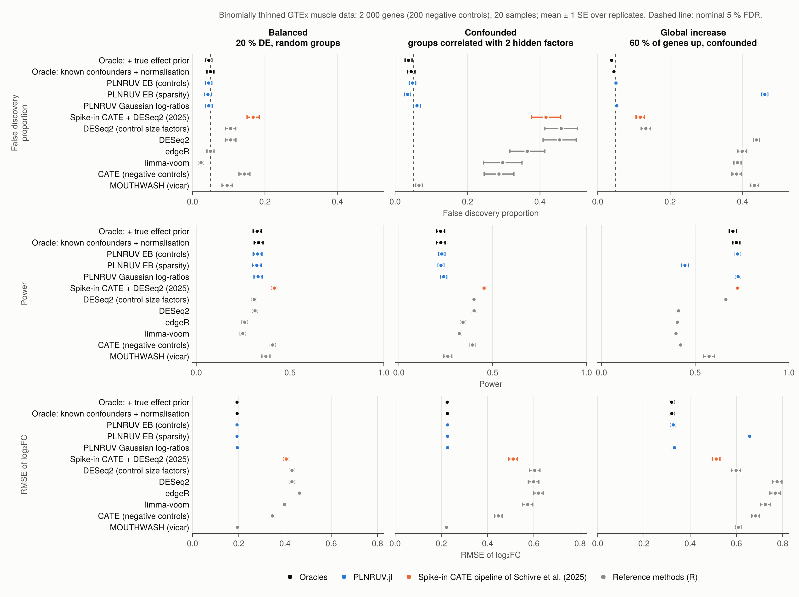
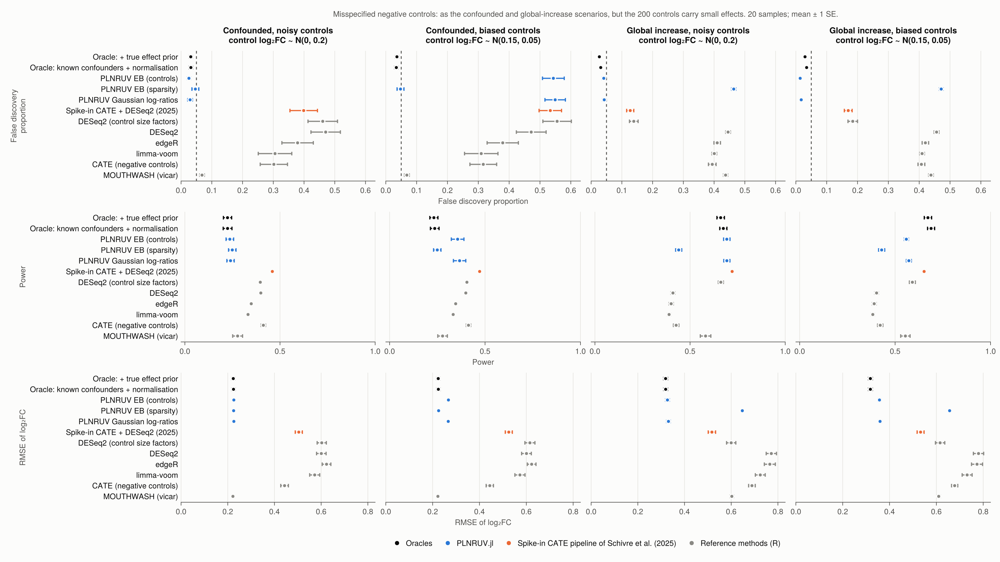

7. Validation
This page collects all the numerical results. Each component is checked against a known truth and, where one exists, against the reference implementation in R. The R packages are used only in the separate benchmark/ environment.
FDP is the false discovery proportion among the genes reported at s-value < 0.05 (or BH-adjusted p-value < 0.05 for the methods without s-values). Null genes and wrong signs both count as errors. Power is the proportion of non-null genes reported with the right sign.
7.1 The simulator
- Thinning probabilities.
thin_countsandseqgendiff::thin_diff, with the same design and coefficients on counts of $10^7$: the largest difference in thinning probability over 6 000 cells is $6.9 \times 10^{-4}$, the binomial noise expected at that depth. - Confounded groups. Both simulators given seqgendiff's own surrogate variables, with target correlations $(0.6, 0.2)$, 30 replicates of 100 GTEx samples:
| factor 1 (target 0.6) | factor 2 (target 0.2) | |
|---|---|---|
| PLNRUV | 0.58 | 0.19 |
| seqgendiff | 0.46 | 0.15 |
7.2 ash and MOUTHWASH
- ash, 5 000 effects, 20 % non-null with sd 2, standard errors 0.5: $\hat\pi_0 = 0.78$ (truth 0.8 plus the near-zero effects), RMSE 0.29 against 0.50 for the raw estimates, FDP 4.8 %.
- MOUTHWASH against vicar. With the same model (three free factors, normal likelihood, no offset factor), the two implementations agree to two or three decimals in RMSE, number of discoveries and FDP.
- The offset factor. Simulated log abundances, 40 samples, 1 000 genes, two confounders, compositional shift of 1 correlated with the group, three replicates:
| RMSE | FDP | |
|---|---|---|
| PLNRUV MOUTHWASH (offset factor, 2 free factors) | 0.10–0.12 | 3–7 % |
| vicar, 3 free factors | 0.15–0.26 | 6–15 % |
| vicar, 2 free factors (shift not modelled) | 0.63–1.04 | 71–81 % |
The offset coefficient is estimated at $\hat\alpha_0 \approx 1.0$, the true shift, with or without control genes.
7.3 The PLN layer
Counts simulated from the PLN model: 30 samples, 1 500 genes, 150 controls, two confounders, compositional shift of 1, latent variances $\sigma_j^2 \sim \text{Gamma}(4, 0.05)$.
- E-step. The Lambert W solution matches a brute-force maximisation ($M = 0.50043$ against $0.50045$ on a grid of step $5\times 10^{-5}$). $\mathcal W_0(e^t)$ is accurate to $3\times10^{-15}$ and finite up to $t = 800$.
- Standard errors. With no confounding, at low depth (22 % zeros): $\hat\lambda \approx 1.0$, coverage of 95 % intervals 95–96 %, FDP 2.5–4.6 %. The latent-scale standard error of §5.4 needs no inflation. Standard errors taken from the residual rows of $M$ instead gave an FDP of 25 %.
- Against a Gaussian analysis of log-CPM. Similar at a median count of 32. At a median count of about 3, the PLN branch has a lower RMSE (0.33–0.43 against 0.36–0.45) and a lower FDP.
- Variance shrinkage, low depth with confounding, mean FDP over four replicates: none 7.1 %, limma 6.3 %, vash 5.4 %, at equal RMSE. On variances with a bimodal distribution, the mean squared error of $\log\tilde\sigma_j^2$ is 0.42 raw, 0.27 with limma and 0.24 with vash.
With confounding and low counts, the FDP is still slightly above the nominal level. The Gaussian pipeline shows the same excess, so it comes from the estimation of the confounders, not from the PLN layer.
7.4 Benchmark on thinned GTEx data
Two-group experiments are simulated from GTEx v8 skeletal muscle by binomial thinning (§6): 2 000 genes, 200 negative controls, 20 samples, 10 replicates per scenario. There are three scenarios:
- Balanced: 20 % of the genes change, log₂ fold changes $\sim \mathcal N(0, 0.8)$, random groups.
- Confounded: the same effects, but the groups are correlated with two hidden factors of the samples (0.6 and 0.2).
- Global increase: 60 % of the genes go up, log₂ fold changes $\sim \mathcal N(1, 0.5)$, confounded. The controls are exactly null, so the assumption of §4.2 holds by construction.
Two oracles give a reference. The first knows the confounding factors and the true normalisation. The second also knows the true distribution of the effects.

| scenario | PLNRUV EB (controls) | PLNRUV EB (sparsity) | oracle | DESeq2 | edgeR | limma-voom | vicar | spike-in CATE + DESeq2 |
|---|---|---|---|---|---|---|---|---|
| balanced | 4.5 % / 0.33 | 4.3 % / 0.32 | 4.9 % / 0.33 | 10.5 % / 0.31 | 5.0 % / 0.26 | 2.3 % / 0.25 | 9.6 % / 0.37 | 16.7 % / 0.42 |
| confounded | 4.8 % / 0.23 | 3.4 % / 0.22 | 4.4 % / 0.22 | 45.4 % / 0.40 | 36.5 % / 0.34 | 29.7 % / 0.32 | 6.6 % / 0.26 | 41.7 % / 0.45 |
| global increase | 5.1 % / 0.73 | 46.2 % / 0.45 | 4.5 % / 0.72 | 43.8 % / 0.41 | 39.9 % / 0.40 | 38.6 % / 0.40 | 43.3 % / 0.57 | 11.8 % / 0.73 |
FDP / power, means over 10 replicates.
- PLNRUV with controls is calibrated in all three scenarios, with the power of the oracles. With 20 samples, estimating the confounders, the offset and the prior costs almost nothing.
- PLNRUV without controls is calibrated when most genes do not change. It fails, as it must, when most genes go up (§1.3).
- The standard pipelines are calibrated only without confounding. The higher power of CATE and of the spike-in pipeline comes with an FDP of 12–42 %.
Misspecified controls. The same confounded and global scenarios, but the 200 controls carry small effects: noisy controls, log₂ fold change $\sim \mathcal N(0, 0.2)$ each, or biased controls, which shift together, $\sim \mathcal N(0.15, 0.05)$, as a spike-in whose amount follows the condition.

- Noisy controls are averaged out. PLNRUV with controls stays calibrated: 2.7 % (confounded) and 4.1 % (global).
- Biased controls break every control-based method in the confounded scenario: PLNRUV 54 %, DESeq2 with control size factors 56 %, the spike-in pipeline 53 %. A shared shift of the controls moves $\hat\alpha_0$, and with it every gene. The sparsity branch is not affected (4.8 %). In the global scenario PLNRUV with controls stays calibrated (1.5 %), with less power (0.56 against 0.69).
Controls that move with the condition, even slightly, are the main threat to a control-based analysis (§8).
Design choices of the empirical Bayes step
Same benchmark, PLNRUV with controls, 10 replicates.
- Additive inflation in the $t$ likelihood (§4.4). Scaling the $t$ by $\lambda$ gave an FDP of 2.2 % in the confounded scenario. Adding the inflation as normal noise gives 5.0 %, with 15 % more power. The balanced scenario stays at 4.5 %.
- Shifted prior for global changes (§4.2). In the global scenario the prior centred at zero estimates $\hat\pi_0 \approx 0.22$ instead of 0.40, and the FDP is 8.3 %. With
mode = :autothe FDP is 5.1 %, with slightly more power (0.73 against 0.70). The held-out gain that triggers the shifted prior is at most 0.003 per gene in the balanced scenario and 0.016 in the confounded one. It is 0.24–0.33 in the global scenario, and 0.06–0.14 for a weaker global change (40 % of the genes, shift 0.5). So the gate at 0.05 never fires without a global change. - Expression-dependent variances (§4.5). The PLN variance $\sigma_j^2$ falls from about 0.45 for genes below 40 reads to about 0.06 above 2 500 reads, a slope of about $-0.5$ on the log scale.
7.5 Few samples and the number of factors
Choosing $q$ by count splitting (§3.3). PLN simulations with two true factors and 20 samples:
- The binomial split chooses $q = 4$ at mean counts around 20 and 150.
- The iterated beta-binomial split chooses $q = 2$ from mean counts of about 3 upwards, after 2–3 rounds.
- Below a mean count of 1 it chooses $q = 0$. There the latent noise cannot be identified, and $q = 0$ is the conservative choice.
Calibration with few samples. FDP of PLNRUV with controls, $q$ chosen by choose_q, 10 replicates.
| data | design | 5 per group | 3 per group | 2 per group |
|---|---|---|---|---|
| PLN-exact simulation | balanced | 5.2 % | 13 % | 31 % |
| PLN-exact simulation | confounded | 3.8 % | 7 % | 12 % |
| thinned GTEx | balanced | 1.9 % | 15.6 % | ~66 % |
| thinned GTEx | confounded | 3.7 % | 22.3 % | ~68 % |
- From five samples per group, the FDP is controlled.
- With three samples per group, fixing $q = 2$ leaves one residual degree of freedom and gives an FDP of 36–41 % on PLN-exact data.
choose_qbrings it to 7–13 %. - With two or three samples per group, every method we tried fails as well, including the oracles of §7.4.
Two causes add up. First, with one or two residual degrees of freedom, each gene's variance rests almost entirely on the shrinkage prior. On PLN-exact data, this alone makes the tails of the null $z$-scores about twice too heavy. Second, real samples differ in their overall variability (individuals, sample quality), which the model does not describe. This explains why GTEx is worse than the exact simulation.
Shrinking towards the trend does not fix it. With var_trend = true, the null tails are corrected on PLN-exact data, where the variance is an exact function of the mean. On GTEx the FDP gets worse: 14.4 % instead of 1.9 % with five samples per group (balanced). Real genes scatter around the trend, and the trend pulls the genes with a truly high variance down.